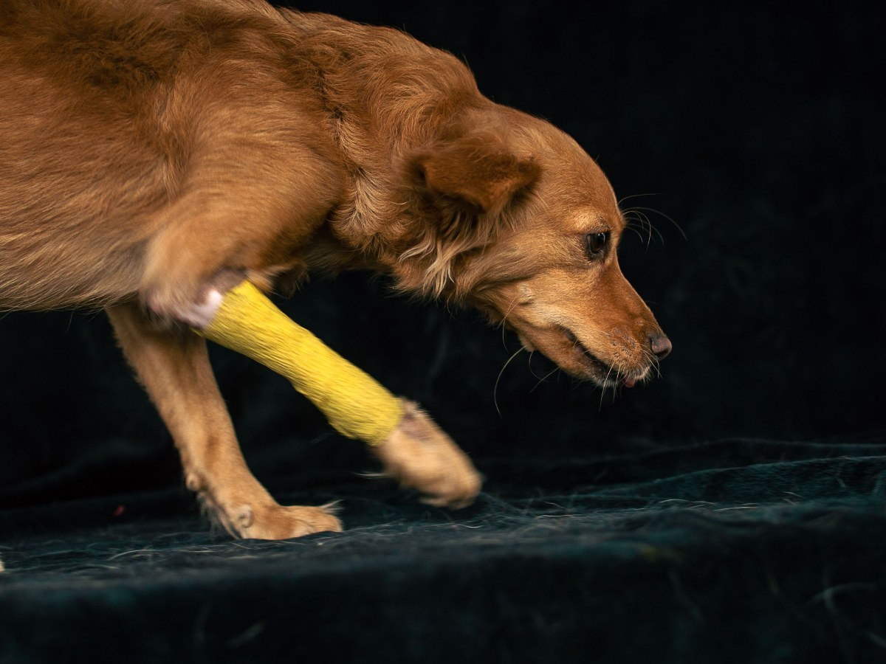
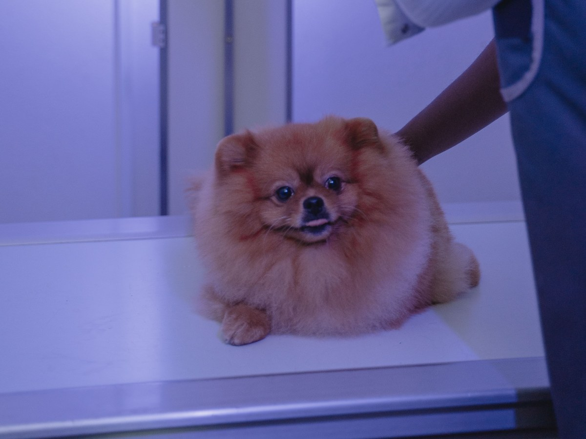
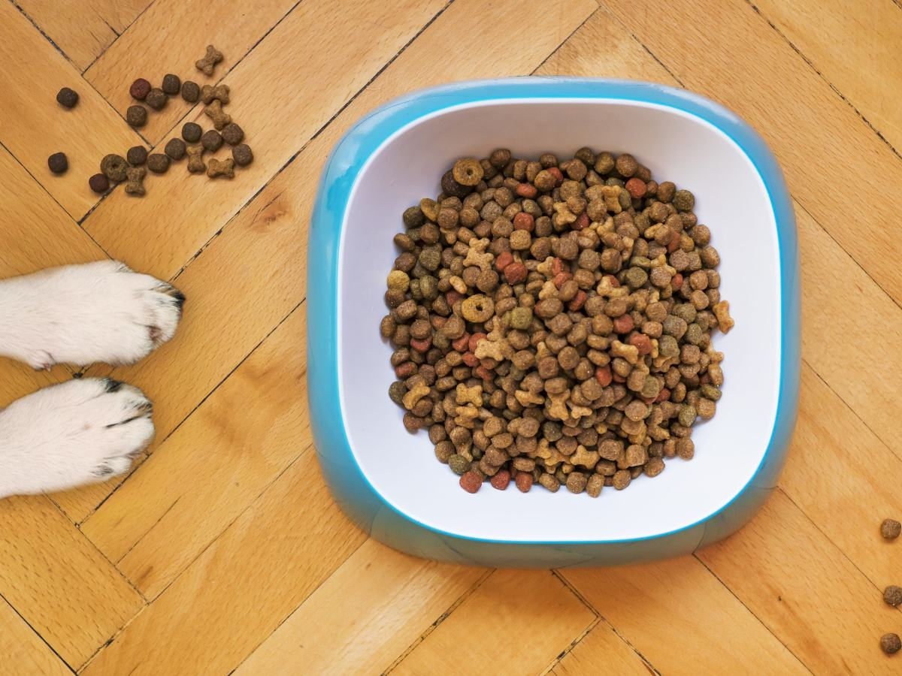
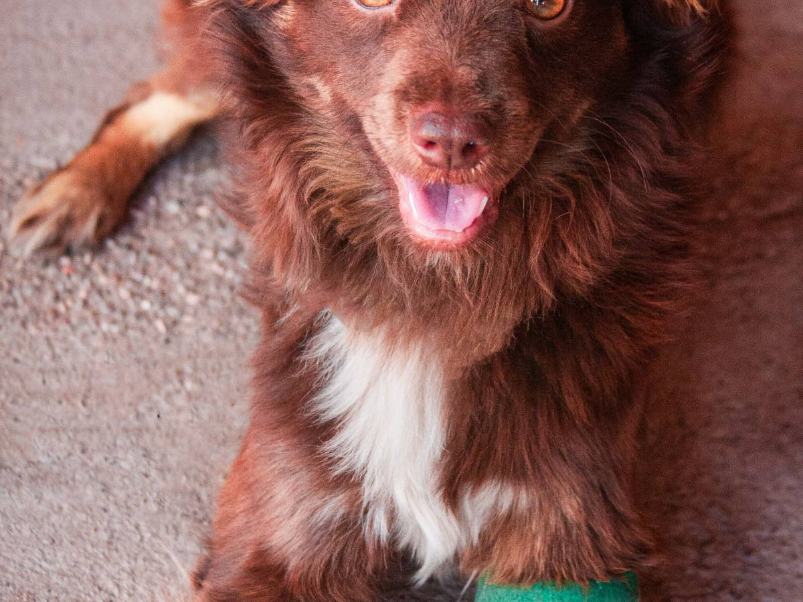
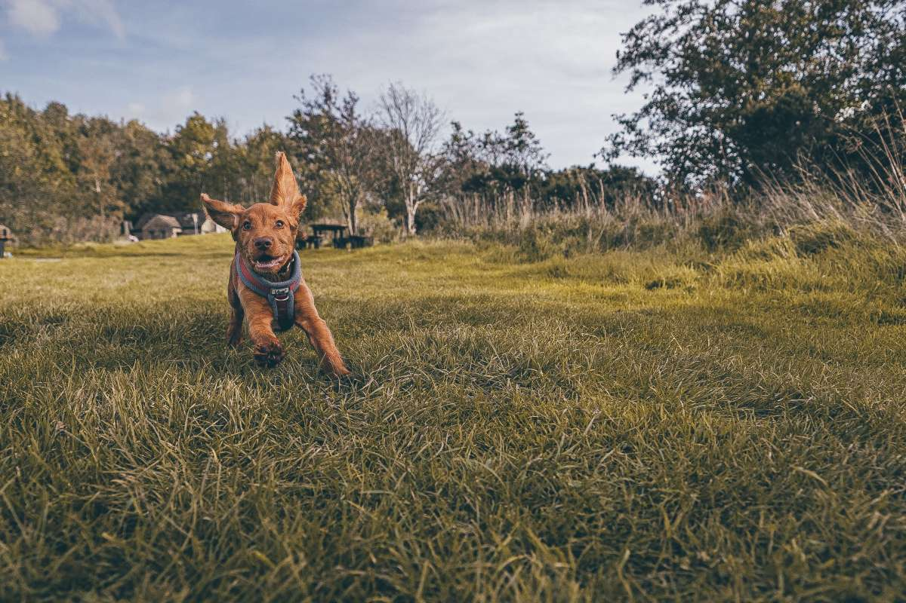
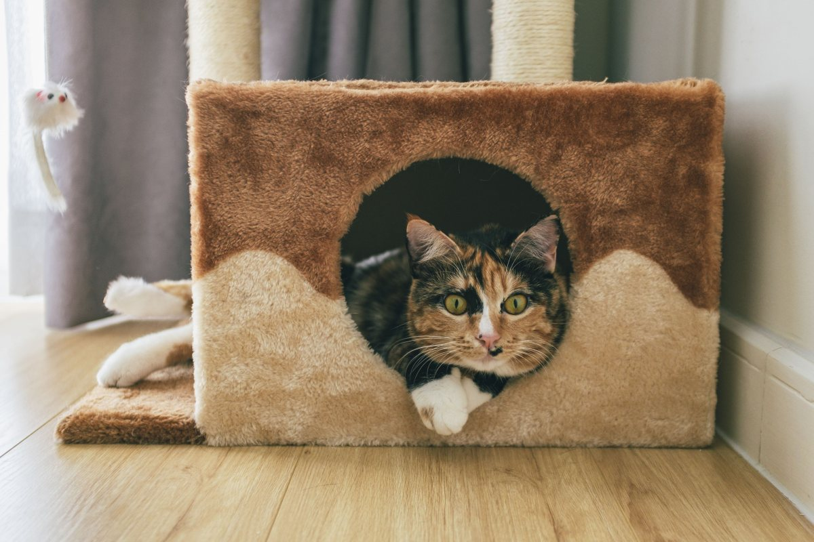
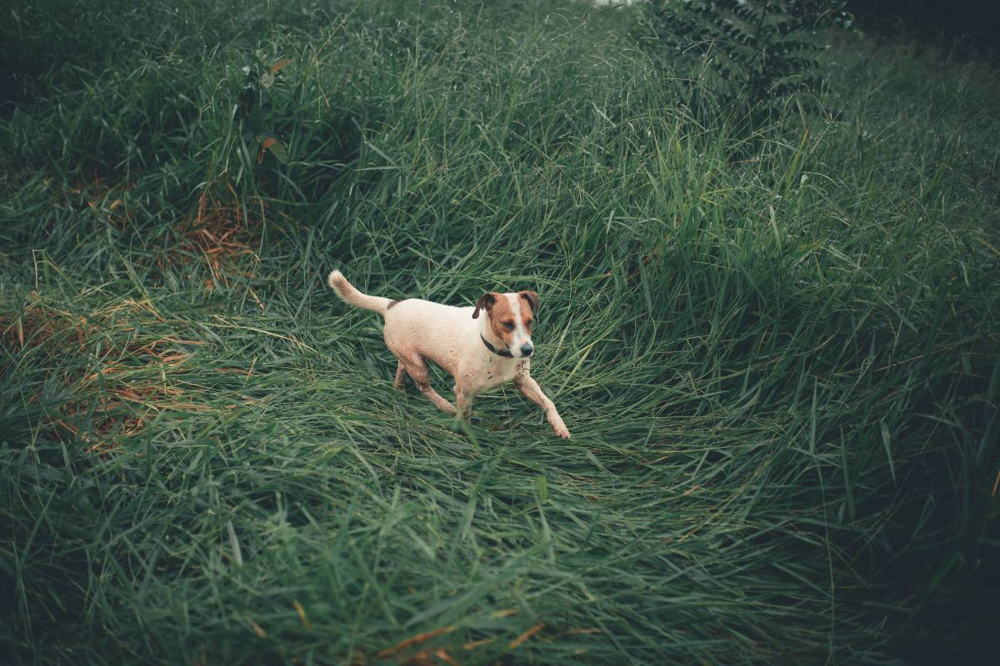

Lautaro · Balmaceda 1555A
De la vacuna a la urgencia.
Una clínica veterinaria completa, en el centro de Lautaro.
- 138reseñas en Google
- 4,8de nota promedio
- 15servicios en su agenda
- 0páginas propias: sólo Facebook y AgendaPro
Antes de salir
¿A qué va a la clínica?
Cada motivo se pide distinto.
- URGENCIA
Algo pasó hoy
Llame antes de salir, para que lo esperen.
- CONSULTA
Algo no anda bien
Pida hora en su agenda en línea.
- CONTROL
Vacuna o desparasitar
O entrar a un plan de salud.
- DESPUÉS
Recuperarse
Rehabilitación y terapias.
Cómo recibe cada caso lo confirma la clínica.
Atención de primera, precios justos.
En Balmaceda 1555A
Lo que hay en Dra. Pets
-

Lo que la distingue
Urgencias
Junto a la consulta de siempre.
-

Por dentro
Radiología
Y ecografías.
-

En la clínica
Laboratorio
Exámenes clínicos.
-

En pabellón
Cirugía
Y hospitalización.
-

También
Dientes y comida
Odontología y nutrición.
-

Para volver a caminar
Rehabilitación
Y terapias alternativas.
Servicios de su agenda en AgendaPro.
138 reseñas y un 4,8.
Destacan el trato y los precios
Pasto, patita y control
Un día en la clínica



Fotos de referencia: ninguna es de la clínica.
Dónde estamos
Balmaceda 1555A, Lautaro
- Dirección
- Balmaceda 1555A
- Teléfono
- (45) 253 1085
- Horario
- Lun a vie 10–13 · sáb 9–14
- Veterinaria Dra Pets
Entrada con acceso para silla de ruedas y estacionamiento.
Balmaceda 1555A, Lautaro Abrir en Google Maps
Para el dueño
Qué es real y qué falta
Lo verificado
Dirección, teléfono, horario y servicios de su agenda en AgendaPro, y las 138 reseñas.
Lo de ejemplo
Cómo pedir cada motivo y las fotos.
Lo que falta
El horario de urgencias, un celular con WhatsApp y fotos del equipo.